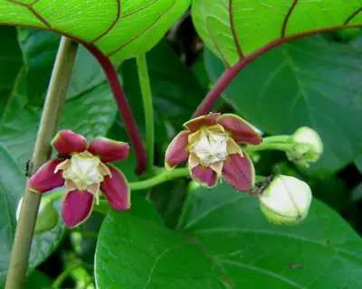

pranet · 出典付きの植物図鑑
Mũhukũra (mukombero) ☠
Mondia whitei (Hook.f.) Skeels · Apocynaceae

Mondia whitei is a perennial herbaceous/woody climber belonging to the family Apocynaceae, and as with most members of this family, has milky latex. Two species of Mondia are recognised, the other being Mondia ecornuta. Known in Chichewa as 'gondolosi', in Kenya it is known as 'mukombero', the rootstock is often collected for medicinal use. It occurs at elevations of 1000 – 1500 m in moist to wet forests, and even in swampy grassland, across Sub-Saharan Africa; it is recorded from Guinea, Nigeria, Cameroon, the Sudan, Uganda, Kenya, Tanzania, Zimbabwe, Malawi, Mozambique, South Africa, Eswatini, and Angola. In Kenya its roots are heavily collected, and this often kills the plant. Some initiatives propagate the species to supply the commercial demand and attempt to re-establish the species in the wild.
出典: Wikipedia (en): Mondia whitei · CC BY-SA 4.0
異名: Chlorocodon whitei Hook.f., Chlorocodon whiteii Hook.f., Periploca latifolia K.Schum., Tacazzea amplifolia S.Moore, Tacazzea laxiflora Engl., Tacazzea viridis A.Chev. ex Hutch. & Dalziel
同定や利用は自己責任でお願いします。この図鑑だけを根拠に野生の植物を食べないでください。
出典
- 学名: World Flora Online Plant List 2026-06 · CC0 1.0
- 名前: Wikipedia の記事名と Wikidata · CC0 1.0（Wikidata）。記事名は事実
- 説明: Wikipedia (en): Mondia whitei · CC BY-SA 4.0
- 食用・毒性: World Checklist of Useful Plant Species (Diazgranados et al. 2020, RBG Kew) · CC BY 4.0
- 分布: World Checklist of Vascular Plants (WCVP), RBG Kew, version 2026-06-04 · CC BY 3.0
このページは pranet のデータから自動生成しています。コードは MIT、データは項目ごとのライセンス（説明）。